Christopher Goerk
Web & Mobile Developer
Welcome to My Portfolio
About Me
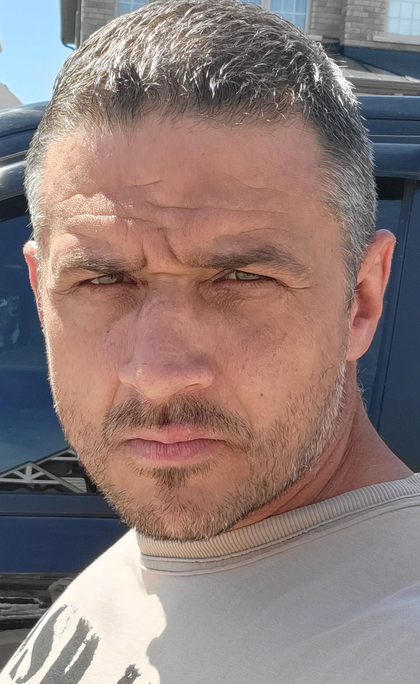Hello! I’m a passionate student at triOS College, where I’m diving deep into the world of mobile and web development. With a strong focus on creating user-friendly and innovative solutions, I’m honing my skills in both front-end and back-end technologies. My coursework and projects have equipped me with a solid foundation in programming languages, frameworks, and design principles.
As I continue to learn and grow, I’m eager to apply my knowledge to real-world challenges and contribute to exciting projects. Whether it’s developing sleek mobile applications or building dynamic websites, I’m driven by a desire to create impactful and efficient solutions. Feel free to explore my portfolio and get in touch if you’d like to collaborate or learn more about my work!
Career Goals
- Master Core Development Skills
- Build expertise in HTML, CSS, JavaScript, and frameworks like React, Flutter, and Swift.
- Create a Strong Portfolio
- Showcase projects that highlight your skills in both web and mobile development.
- Contribute to Open Source Projects
- Collaborate on open-source projects to gain experience and connect with the developer community.
- Build Real-World Projects
- Develop and publish at least one mobile app and one web app to demonstrate practical skills.
- Focus on UI/UX Design
- Hone design skills to create applications that are both visually appealing and user-friendly.
- Develop Strong Collaboration Skills
- Work on team projects to improve communication, problem-solving, and project management abilities.
- Stay Updated with Industry Trends
- Continuously learn emerging tech like AI, PWAs, and serverless architectures.
- Prepare for Professional Certification
- Pursue relevant certifications to validate your skills and strengthen job applications.
- Secure an Internship or Entry-Level Role
- Seek an internship or entry-level position to learn from experts and apply your knowledge practically.
- Build a Professional Network
- Connect with developers, mentors, and industry professionals for future growth and opportunities.
My Work
All images are school projects and for educational purposes
My Skills

 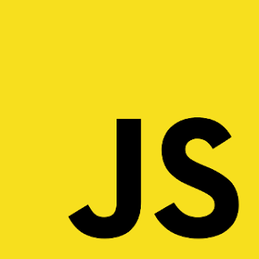
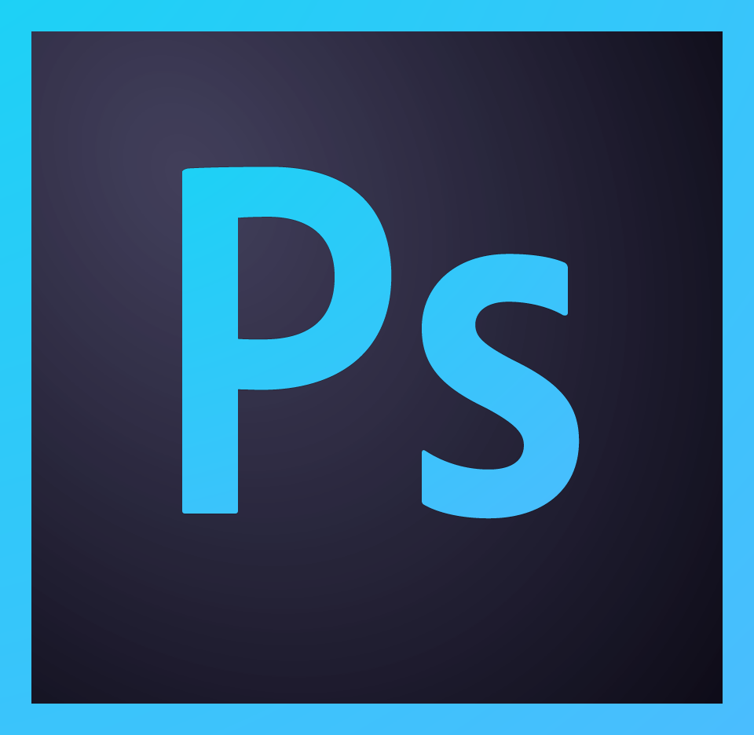
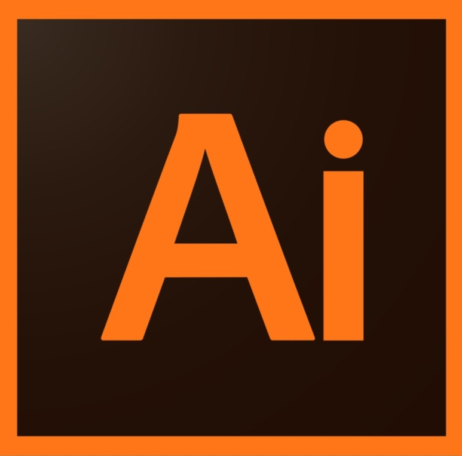
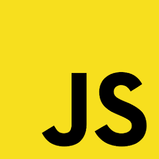
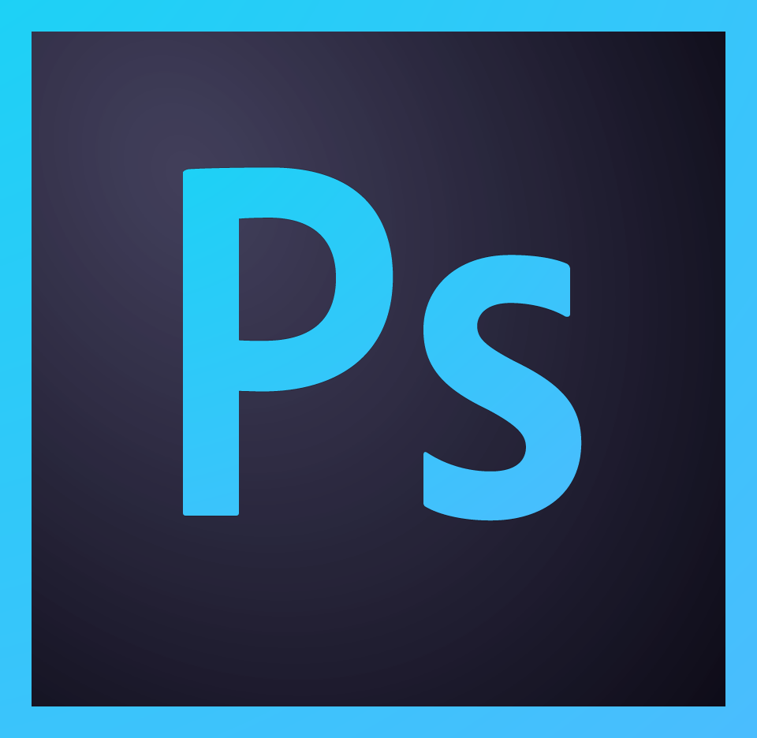
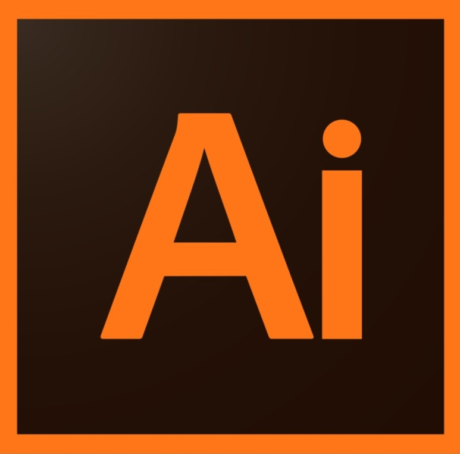
 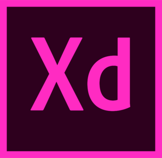
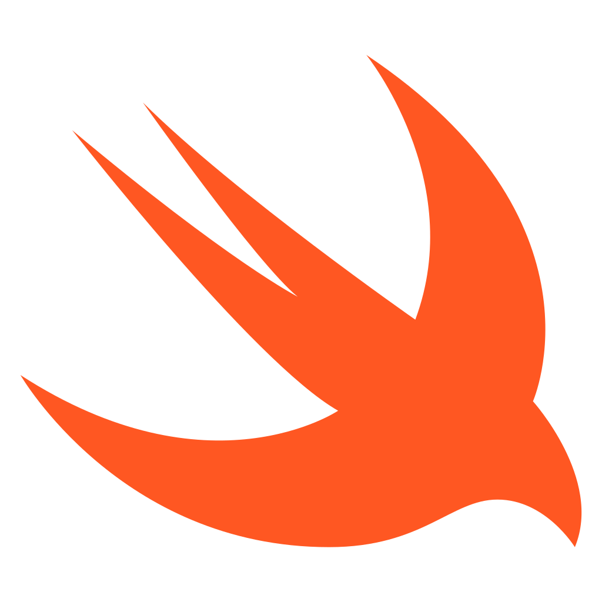
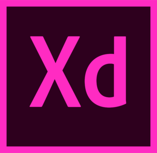
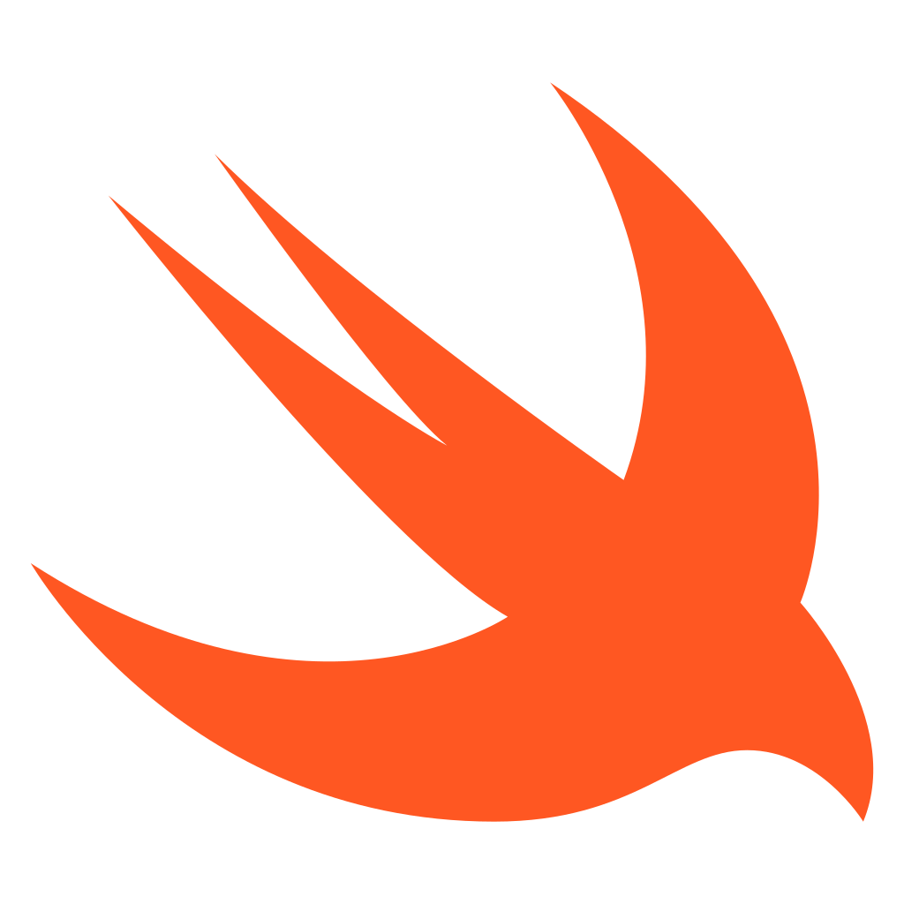
Contact Me
If you have any questions or would like to get in touch, feel free to contact me using the information below:
Email: clgoerk@rogers.com